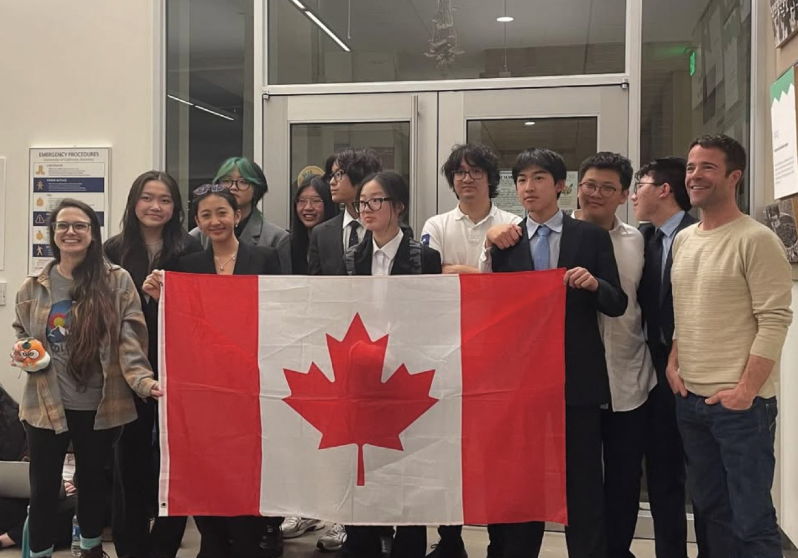
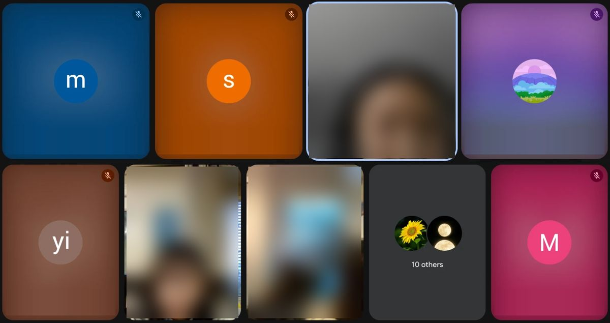
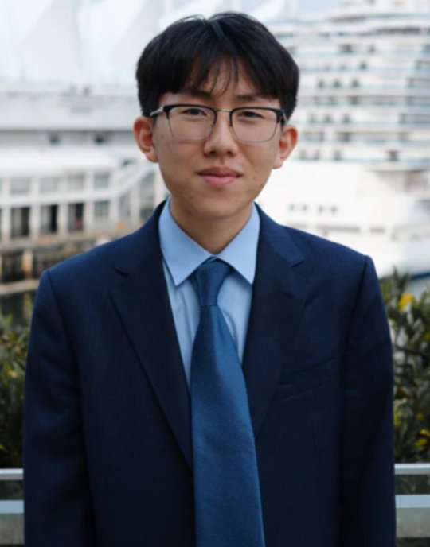

PNDS 2026 秋季课程
我们的辩论课程正在进行中，每周二下午 4:00 至 5:30（太平洋时间）上课。现在加入还不晚。请使用下方报名表、发送电子邮件，或通过微信（pnds_inquiry）联系我们。
- 形式
- Zoom 线上直播
- 年级
- 三年级及以上
- 费用
- 免费
卑诗省及太平洋西北地区 · 成立于 2023 年
PNDS 是一个由学生主导的非营利协会，为卑诗省及其他地区的辩手提供免费辩论课程，以及低收费的夏令营和比赛。活动收入会再投入到我们的项目中。赞助资金直接用于我们的项目；部分慈善活动则会将收益捐出。

学费节省金额根据已培训学生人数 × 一般私人辩论辅导收费估算。
我们的辩论课程正在进行中，每周二下午 4:00 至 5:30（太平洋时间）上课。现在加入还不晚。请使用下方报名表、发送电子邮件，或通过微信（pnds_inquiry）联系我们。

填写此表并点击按钮，系统会打开一封已填好您信息的电子邮件，您只需点击发送即可。
设备上没有邮件应用？请点击“复制信息”，然后粘贴到 Gmail、Outlook 或微信（pnds_inquiry）中，发送至 pnds.inquiry@gmail.com。
2023
2023
季节性辩论夏令营，帮助学生在短时间内提升辩论能力，并结识同样热爱辩论的朋友。全部收入已捐出。
团队成员简介为英文。

联合主席
Flora Tu is a senior at Burnaby North Secondary School. She started debate in 8th grade at Vancouver Debate Academy. There, she debated under "VDA - Vancouver TZ" and ranked as the top 2025–2026 season international team in NDCA points and bid count. She was also tied for 17th in bid count in Public Forum in the world. Outside of debate, Flora likes to play piano and collect vinyl.

联合主席
Angelina Guo is a junior at Hugh McRoberts Secondary. She has been involved with the Pacific Northwest Debate Society for 2 years where she teaches debate and organizes events. She competes in varsity Public Forum and has most notably received awards from Stanford, Harvard, and Berkeley. Outside of debate, Angelina serves as Co-President of Adopt Our Community, which serves food-insecure families in the Lower Mainland, competes in international moot court competitions, and is a Petty Officer First Class with RCSCC Fraser.

联合主席
As a junior at Magee Secondary School, Marcus is beyond ecstatic to serve as Co-President of PNDS for the 2026–27 term. He is committed to breaking down the pervasive barriers that prevent young and blossoming students from pursuing debate by providing free classes and tournament opportunities. He hopes that all new debaters will become enamored with debate as he once was as a naive fourth grader, and that they are able to find their own voice within PNDS or debate in general. In his free time, he can be found stuck choosing which toppings to get on his Oakberry bowl, trying to understand (with much failure) whatever critical theory he has stumbled upon, or simply perusing the newest items within a grocery store.

筹款总监
Miguel is experienced in the formats of Lincoln-Douglas, Public Forum, the Canadian National Debate Format, and British Parliament. He is also well versed in Model UN. Miguel is a Grade 10 student at Richmond Christian School. He plans to become a computational neuropathologist, leveraging computational tools to detect diseases. Currently, he is using deep learning to detect cognitive impairment in 3D volumetric brain scans, and has secured mentorship at the University of British Columbia. He also leads clubs at RCS that aim to inquire critically and to give back to the community.

教学总监
Victor is a senior at Grandview Heights Secondary and has debated for 6 years with experience in CNDF, PF, Worlds, and BP. He leads his school's debate club as President, and serves as the coaching director of PNDS. Outside of the debate space, he loves to read, talk about philosophy, and play golf.
是的。我们的秋季课程免费。夏令营和比赛收费较低，活动收入会再投入到我们的项目中。
三年级及以上。欢迎不同水平的学生，包括完全没有经验的初学者。
每周二下午 4:00 至 5:30（太平洋时间），在 Zoom 上直播授课。
由我们的学生执行团队授课，并由教学总监负责。我们的教练都是经验丰富的高中辩手，参加过公共论坛辩论（Public Forum）、加拿大全国辩论赛制（CNDF）、世界学校辩论赛制（Worlds）和英国议会制（BP）等赛制的比赛。您可以在认识我们的团队中阅读他们的简介。
可以，现在加入还不晚。点击这里报名，我们会帮您安排。
一台安装了 Zoom 并配有可用麦克风的电脑或平板。
是的。太平洋西北辩论协会（Pacific Northwest Debate Society）是在卑诗省注册的非营利协会（S0078788）。
发送电子邮件至 pnds.inquiry@gmail.com、通过微信（pnds_inquiry）联系，或在 Instagram 上找到我们。
我们正在寻找愿意参与运营 PNDS 的学生，工作内容包括组织比赛、对外宣传以及辅导新辩手。填写工作人员申请表（英文）后，我们会与您联系。
索取 PNDS 赞助方案，或写信给我们的筹款总监 Miguel De Las Alas，洽谈赞助比赛或夏令营事宜。